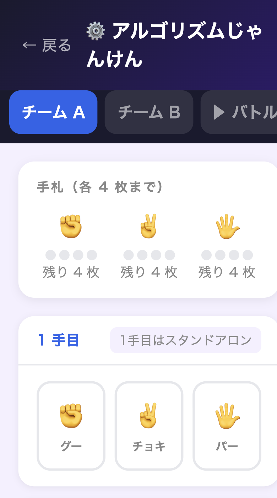

▌ ねらい
- 条件分岐（if–then–else）の構造を体験的に理解する
- チームで戦略を設計・言語化する
- 結果を分析して改善案を考える
- 「決定論的ルール」と「読み合い」の関係に気づく
▌ 準備物
- ワークシート（チーム分）・封筒（封印用）
- バトルシミュレーター（week2/battle.html）
- プロジェクターまたは大型モニター・タイマー

バトルシミュレーター（week2/battle.html）

※後判定：相手の手を見て後出し可。両者同時後判定→両者 else。
| 経過 | フェーズ | 内容 | ファシリテーターのポイント |
|---|---|---|---|
| 0′ | 導入 | 「決めたルールで自動じゃんけん」デモ提示 | まず見せてから説明する |
| 5′ | ルール説明 | 手札・手番・条件・得点をスクリーンで説明。条件分岐は「高価なカード」と表現 | 「後判定は強い。でも…？」で疑問を残す |
| 10′ | 設計① | チーム分け→ワークシートで10手番を設計→封印 | 「全部グーにしたら？」を問いかける |
| 22′ | バトル① | 封印開封→シミュレーターに入力→1手ずつ全員で確認 | 「なぜこの手を選んだ？」と聞く |
| 29′ | 振り返り① | 「どこで点を落とした？」「ループしたのはどこ？」を全体共有 | 勝敗より分析の言語化を重視 |
| 34′ | 設計② | 改良版アルゴリズムを再設計・封印（5分） | 「相手の手を読んだ設計にできる？」 |
| 39′ | バトル② | 同じ流れでバトル実施 | 改良点が結果に出ているか注目 |
| 43′ | まとめ | 「条件分岐＝プログラミングの基本」を言語化。来週の予告 | 「もっと面白くするには？」で締める |
| 設定 | if が不成立のとき（elseが発動） | elseの期待値（勝ち2/あいこ1/負け0） |
|---|---|---|
| if: 相手がグーなら → パー | 相手はチョキ or パー（半々と仮定） |
else=グー: 1.0 else=チョキ: 1.5（最良） else=パー: 0.5 |
ポイント: else は「ifが外れたときの相手分布」に対して最適化する。どれでも同じにはならない。
| 知識・理解 | if–then–else の構造を言葉で説明できる |
| 思考・判断 | 結果を見て設計の問題点を指摘できる |
| 協力・表現 | チームで意見を交わして設計をまとめられる |